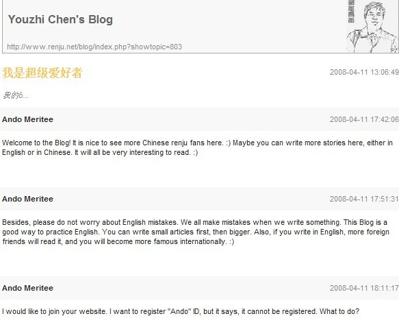
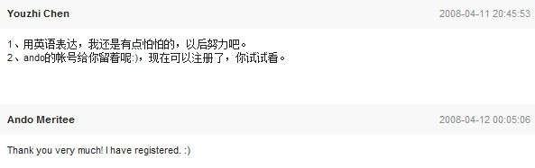

我找到证据了！！
#1 我找到证据了！！作者：踵酃 发表时间：2011-3-6 1:54:16
我找到ANDO确实注册爱五子棋论坛的绝对证据！
这并不是秘密（2008年就发生了），可能老ID都知道，我也一早听闻，但还是稍微有点怀疑。
通过以下对话，我们发现安度会看中文，但不知道会不会打中文。

首先是2008年有志在renju.net发一个信息， 主要是告诉安度会把安度的部分文章翻译成中文共享iwzq.com
安度也表示欢迎，并打算在IWZQ注册个ID“Ando".

Thank you very much! I have registered. :)
红色字体证明安度确实注册了。 而且是用＇ａｎｄｏ＂注册地。
附加：已经验证，确实有Ando这个论坛ＩＤ， 验证方法，在登陆ＩＤ，用Ando，密码随便打个，然后系统会告诉你，密码错误。 也就是说帐户存在，但密码错误。
http://www.renju.net/blog/index.php
［此帖子已被 踵酃 在 2011-3-6 1:55:16 编辑过］
［此帖子已被 踵酃 在 2011-3-6 2:05:59 编辑过］
#2 Re:我找到证据了！！作者：极地剑客 发表时间：2011-3-6 7:03:46
什么情况???N年没来了~#3 Re:我找到证据了！！作者：愉悦深思 发表时间：2011-3-6 13:37:54
ShowPost.asp?ThreadID=3649#4 Re:我找到证据了！！作者：穷乡僻壤 发表时间：2011-3-29 13:32:06
这么行? 呵呵